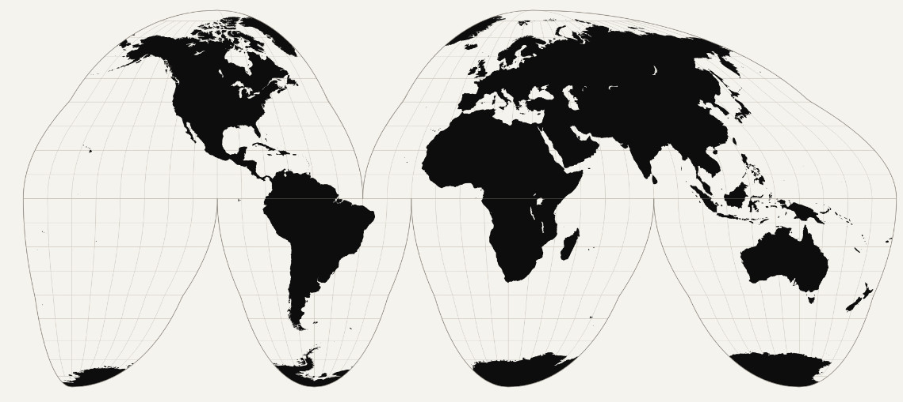

What is a Geographic Information System (GIS)?
A Geographic Information System (GIS) is a digital tool for analyzing information through geography. GIS helps researchers investigate spatial relationships, patterns, and movement—for example, where people, objects, buildings, ideas, and cultural practices were located and how they changed or circulated across regions and over time.
For art historians, GIS offers spatial context for studying artistic and cultural exchange. Within the Digital Mediterranean Project, GIS prompts students to think spatially about the medieval Mediterranean:
What is ArcGIS StoryMaps?
ArcGIS StoryMaps integrates interactive maps with text, images, video, and other multimedia elements. This digital tool enables students to present research as a visual narrative, expanding beyond the format of a traditional research paper.
GIS supports the investigation of spatial relationships, while StoryMaps provide tools to present and communicate your findings. To simplify the concept:
Research → GIS → Spatial Analysis → StoryMaps → Digital Presentation
Using StoryMaps in Academia
Learning GIS and StoryMaps fosters spatial thinking, digital literacy, research abilities, and visual storytelling skills. Students investigate how the environment shapes historical events, artistic production, cultural exchange, and the movement of people, objects, texts, and ideas.
Instead of only writing a traditional research paper, students take on the roles of visual storytellers that are based on academic research. They develop a central argument, analyze spatial relationships, and present their findings through an interactive digital narrative.
These skills extend beyond the classroom. GIS and digital storytelling are utilized in fields such as history, political science, heritage preservation, museums, cultural institutions, urban and landscape planning, research, and public humanities. A completed StoryMap can also serve as a polished, public-facing project for a student’s academic or professional portfolio.